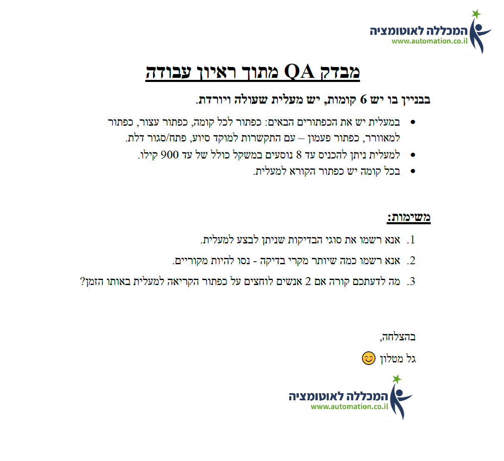
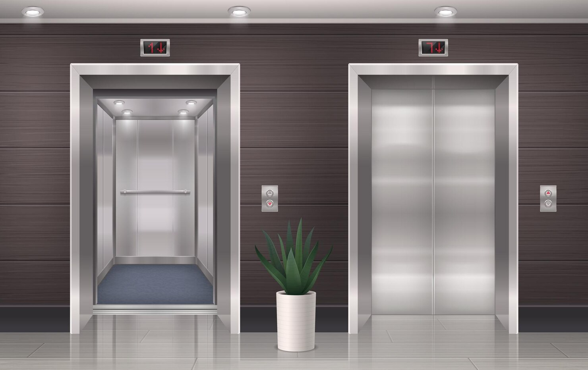

שיעורי בית - בדיקות מעליתTommy Cohen

שאלות כלליות
מה המטרה העיקרית של המעלית? האם היא נועדה להסיע אנשים או משא כבד כמו סחורות?
האם המעלית מתוחזקת בזמן? מתי היא טופלה בפעם האחרונה?
באיזה מערכת המעלית משתמשת?
האם ידוע על בעיות קודמות במעלית? האם תוקנו?
שאלות ספציפיות
מהם סוגי הבדיקות שאני צריך לבצע?

-
Functional Testing בדיקת פונקציונליות
האם המעלית מבצעת את כל הפקודות שנותנים לה ע"י לחיצה על הכפתורים בתוך המעלית ומחוץ לה?
האם המעלית עוצרת בכל הקומות?
האם המעלית עוצרת בקומות הנכונות לפי כל כפתור?
האם דלתות המעלית נסגרות בצורה תקינה?
האם כפתור החירום פועל כשהמעלית תקועה?
-
Compatibility Testing בדיקת תאימות
האם המערכת של המעלית מתאימה לשימוש שנקבע לה ?
-
Performance Testing בדיקת ביצועים
האם המעלית מתפקדת בצורה טובה גם בזמן עומס מירבי וגם ללא עומס כלל? האם היא מגיעה מהר ליעדה? האם היא עולה ויורדת באותה המהירות? האם המעלית מסוגלת לתפקד לאורך זמן ארוך?
-
Load Testing בדיקת עומסים
בדיקה האם המעלית עומדת בעומס שתוכנן ומוצהר ? מה קורה לה בזמן עומס? מה קורה למעלית בזמן עומס יתר?
-
Stress Testing בדיקת מצבי קיצון
בדיקת כיצד המעלית מתנהגת לאורך זמן כאשר היא נתונה לתנאי קיצון למשל אם לוחצים על כמה קומות במקביל
-
Security Testing בדיקות אבטחה
האם המעלית בטוחה לשימוש? האם הדלתות נסגרות לחלוטין לפני שהמעלית יוצאת לדרך? האם הדלתות נשארות סגורות במהלך הנסיעה? האם המעלית יציבה? האם המעלית נוסעת במהירות סבירה ולא מהירה מדי? האם היא מאטה בצורה בטוחה?
-
Accessibility Testing בדיקת נגישות
האם המעלית נגישה לבעלי מוגבלויות?האם קיים מוט אחיזה? האם היא גדולה מספיק לכניסה עם כיסא גלגלים? האם הכפתורים בולטים למגע על מנת שעיוורים יוכלו לזהות את הכפתור? האם המעלית קוראת בכריזה על סגירת דלתות והגעה ליעד? האם היא גדולה מספיק כדי להיכנס עם עגלה ותינוק? האם היא קלה לכניסה ויציאה?
-
Usability Testing בדיקת ידידות הממשק
האם המעלית נוחה לשימוש? האם היא לא מסובכת לתפעול? האם העיצוב של הצג והכפתורים ידידותיים?
-
Survival and Recovery Testing - בדיקת שרידות
מה קורה למעלית בזמן הפסקת חשמל? האם המעלית מסוגלת להמשיך לתפקד בזמן באג במערכת? האם המעלית מתפקדת כאשר אחד הכפתורים נתקע?
-
Interface Testing - בדיקת תאימות ותקשורת של כל החלקים
האם כל הכפתורים של הקומות קיימים במעלית? האם קיים כפתור פעמון בזמן חירום? האם קיים כפתור איוורור? האם קיימים כפתורי עצירת דלתות?
-
User Interface (GUI) Testing - חווית המשתמש
האם השימוש במעלית נוח? האם הכפתורים נעימים ללחיצה? האם יש מראה במעלית? האם מוצג באופן ברור מספר הקומה על הצג?
?מה לדעתכם קורה אם 2 אנשים לוחצים על כפתור הקריאה למעלית באותו הזמן
במצב בו 2 אנשים לוחצים על כפתור הזמנת המעלית באותו הזמן ייתכן שהמעלית תגיע למי שהכי קרוב אליה ביחס לכל הקומות והמעלית לא תושפע ממהירות הלחיצה על הכפתור.